Andorid Projects
1. Virtual Guide Dog.
A research prototype, Virtual Guide Dog, It is an application which helps visually impaired person to cross the intersection without any help from either dog or any individual.
The applicatoin gets current gps data from hardcoded chip, the app commincates with the traffic signal module using bluetooth available at the intersection. As soon as it gets the confirmation from signal module, it indicates the useer with text2speech.
Task: The gps location provided by hardcoded chip is not very accurate, since it depends on surrounding and the position of standing.
Screenshots
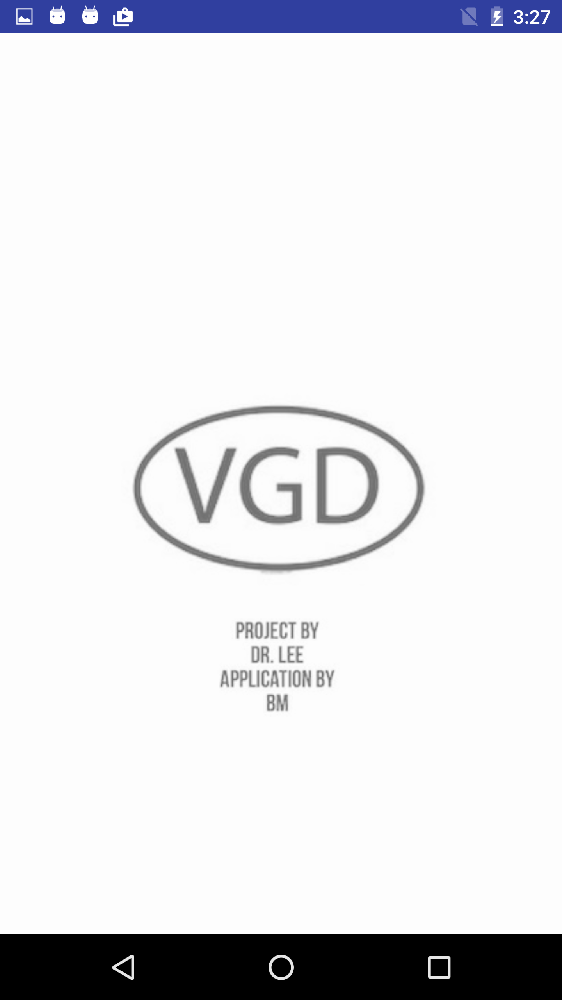


2. French Tutor.
Fun Project for a friend in India. She wanted a basic application
Screenshots
 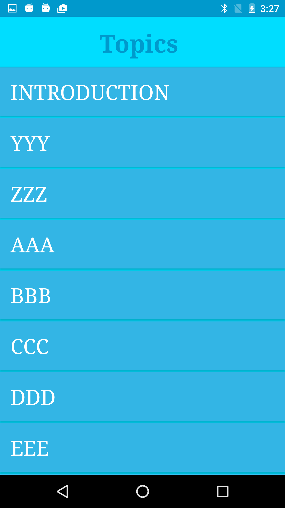
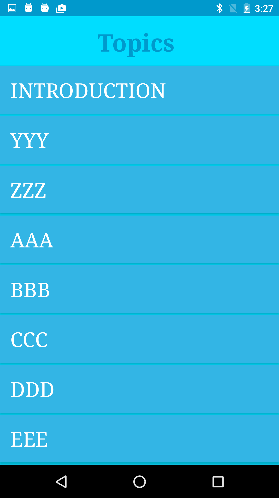
 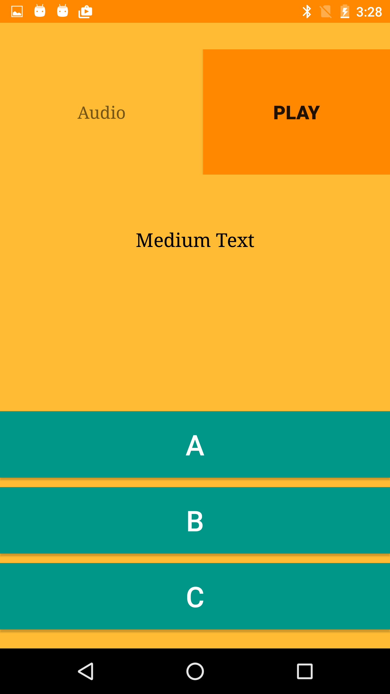
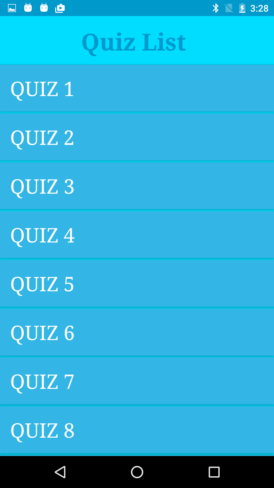
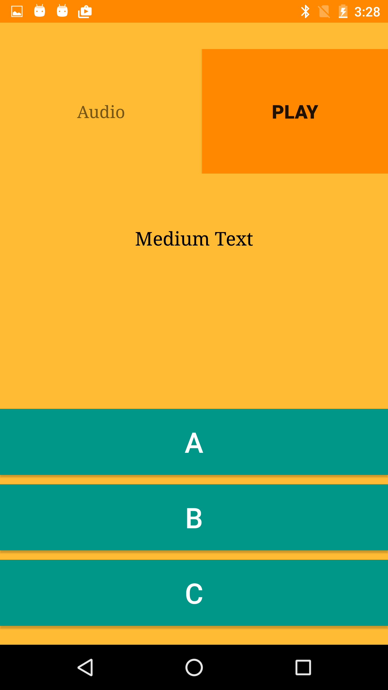
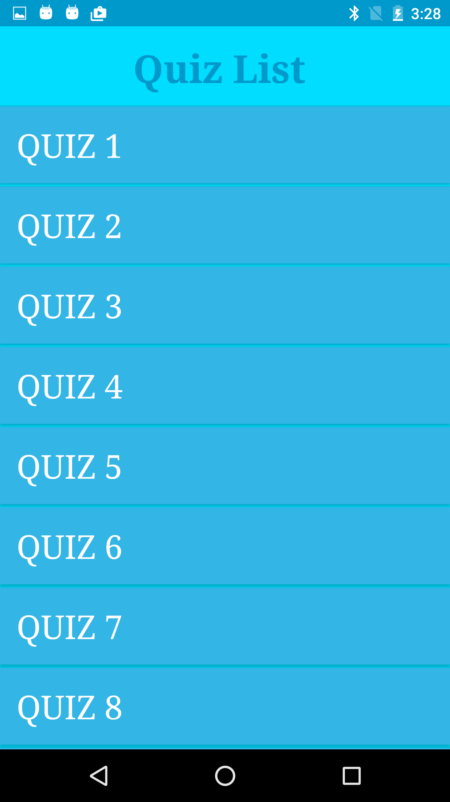
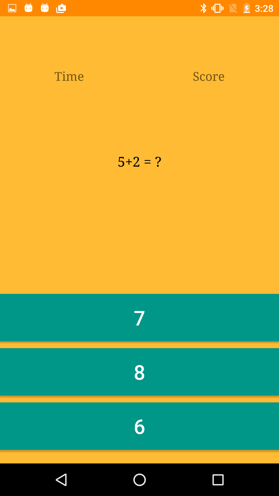


3. Basic Photp editing.
android details Cell detection in a maze, where cells are moving from one side to another. Cells are detected to understand their decision making capabilities. A post image processing projects on digital images of stem cell.The goal was to make an effective algorithm to segment the cells from hazy digital images and track the path of the cells in a maze. The segmentation was done using morphological functions. The data was further used for study of decision making capabilities of the cells using machine learning.
Screenshots
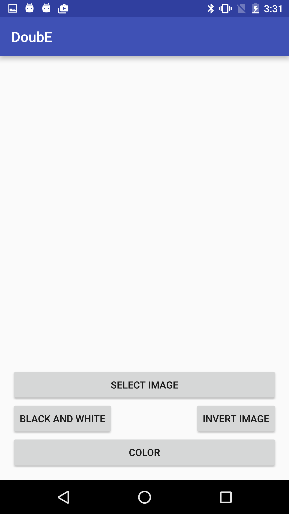


 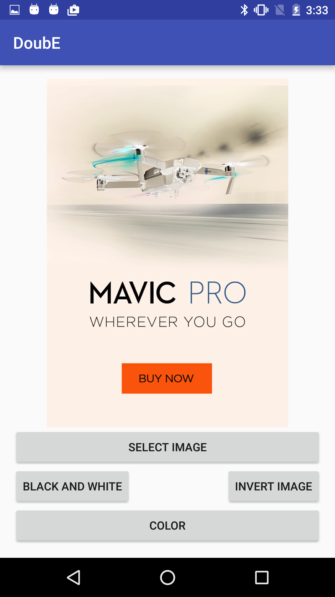
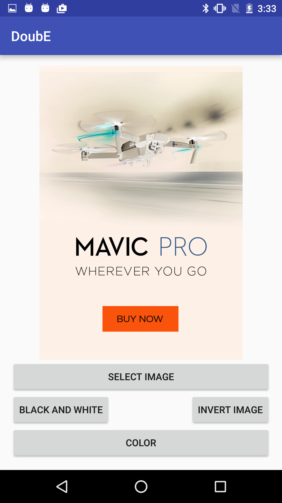